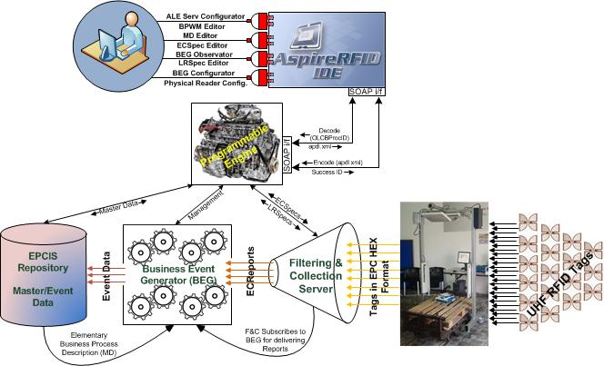
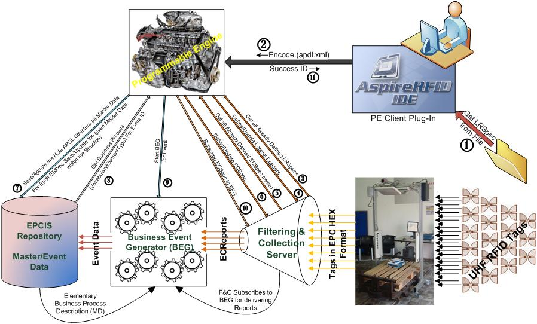
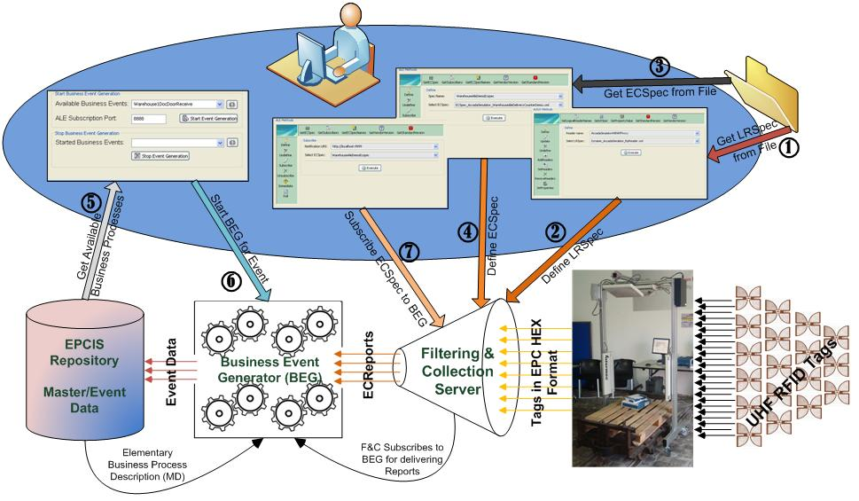
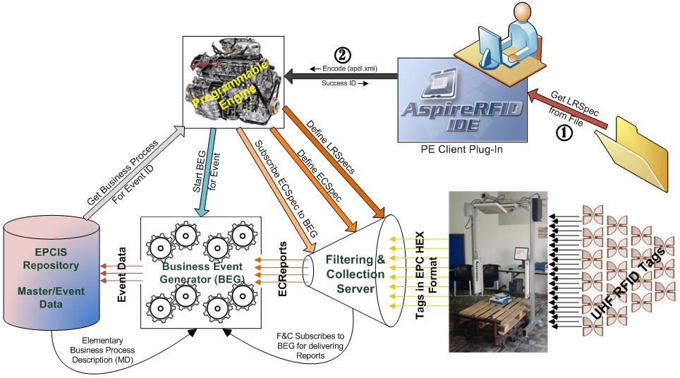
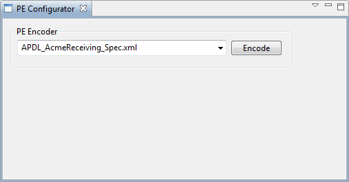

The ASPIRE Programmable Engine (APE)
Overview
The ASPIRE Programmable Engine (APE) is a run-time module that allows the development and deployment of well-defined, specific scenarios. The Programmable Engine comprises two types of functionalities:
- Encodes functionalities enabling the encoding and subsequent mapping of an APDL compliant instance to the ASPIRE middleware configuration files comprising the RFID solution
- Decodes functionalities enabling the decoding of an RFID solution to an APDL file for subsequent processing and related changes in the solution.
Both functionalities come with the related APIs and they are exposed as Web Services (using WSDL for service description and SOAP for message exchange).

As demonstrated in the figure above, the APE module lies logically between the AspireRfid IDE and the middleware infrastructure. The APE can be used to "encode" business logic from an APDL file into the middleware or to "decode" middleware configuration into an APDL file.
Encode Example
The figure below depicts the steps carried on by the middleware in the case of an "encode" command issued by a client. According to the example, a user will "encode" an APDL document into a running instance of the middleware.

The middleware will perform the following actions, in the presented order:
- The PE Client retrieves the LRSpec from the file and maps it into an OLCBProc (using JAXB for XML binding) (step 1)
- The resulting OLCBProc element will be delievered to the APE server. In its current form, the communication is implemented using Apache CXF Web Service framework (step 2)
The APE Server will analyze the element and first it will configure the F&C server. More specifically it will
- Get the set with the reader names (step 3)
- Define/update the readers (step 4)
Next, the corresponding Event Cycle Specifications (ECSpec's) will be defined. These two steps define how the F&C server will generate its reports.
- Get the ECSpec names (step 5)
- Define/Update the ECSpec's (step 6)
The next step is to configure the EPCIS repository:
- Configure the EPCIS, using the EPCIS capture interface (step 7)
Then, configure the BEG server (how the reports generated by the F&C server will be mapped to information stored in the EPCIS repository)
- Get the the VocabularyElementType from EPCIS for each specific EBProc ID (step 8)
- Configure BEG functionality for the given EBProc ID (steps 9, 10)
- Finally, the execution code is sent back to the client (an integer technically, 400 for success, 425 for failure) (step 11)
Among the conclusions that can be drawn is that the effort required in order to have a fully configured up-and-running middleware instance is dramatically reduced. With the use of APE, the numerous steps that a user would otherwise have to follow through the Aspire IDE are no longer necessary.
How The Programmable Engine Changes the AspireRfid Configuration Process
Let us compare the two AspireRFID configuration methods: the conventional and the APE-client method.
Configuring in the Conventional Way
To achieve the configuration of the middleware for even a relatively simple scenario, like the one that is described
here where we define only one Elementary Business Process (EBProc), it would require to follow a few steps and to use a bunch of different "Configurators" (e.g. ECSpec Configurator, LRSpec Configurator and BEG configurator). The figure below illustrates the different steps that an RFID integrator should follow to configure the AspireRFID middleware with the use of the aforementioned tools.

More specifically for defining an Elementary Business Process we would have to:
- Use the LRSpec Configurator plug-in where the LRSpec file should be retrieved (Step 1) from the folder that was stored and then “Define” it to the ALE module paired up with the Logical Reader name (Step 2).
- The next step, with the help of the ECSpec configurator plug-in, would be to "Define" the required ECSpec file which should be retrieved from the folder that is stored (Step 3) and then be "Defined" paired up with the ECSpec name to the ALE module (Step 4).
- The next module that should be configured is the BEG and this is done with the use of the BEG configurator plug-in. With this plug-in firstly we retrieve all the available, already predefined, Business Events from the EPCIS repository (Step 5) and as soon as we choose the one that interests us, and set up a port for the BEG to receive reports for the specific Business Event, we activate BEG to “serve” the Event (Step 6).
- For the last step, by using again the ECSpec Configurator in "Subscribe" mode this time, the already predefined ECSpec should be Subscribed (Step 7) to the port that the BEG was prior (at Step 6) configured to receive reports.
Configuring in the Programmable Engine Way
From the previous section we observe that, to configure the AspireRFID middleware with the conventional way, for just one EBProc seven steps are required by the user.
In this section we describe the steps required to configure the AspireRfid middleware with the use of the APE plug-in (client) again for only one EBProc. It is worth mentioning that even if we had to configure the AspireRFID middleware for "N" EBProc's (even for a complete Open Loop supply chain scenario) the steps that the user would have to follow would be the same as the ones described below and would have to follow them once.
Assuming that the APDL XML file has already been build for configuring the AspireRFID middleware with the APE's User Client plug-in the first step would be to retrieve the "apdl.xml" file from the filesystem (Step 1). The second and final step would be to use the "Encode" service of the APE through the PE Client (Step 2).

Summing up, from the figure above we easily observe the differences in complexity and steps required for the two different configuration methods:
- The conventional way requires 7 x "N" Steps (where "N" is the EBProc's required to describe the whole supply chain scenario).
- Using the APE, only 2 steps are required regardless to how complex the scenario is.
Programmable Engine in Action
- Start Tomcat with the following deployed
- aspireRfidALE (more on the F&C Server)
- aspireRfidBEG (available on the AspireRFID Forge)
- aspireRfidEpcisRepository (more on the EPCIS repository)
- aspireRfidProgrammableEngine (available on the AspireRFID Forge)
- From the AspireRFID IDE, open the "PE Configurator" View. From the dropdown list choose the APDL_AcmeReceiving_Spec.xml file (also available here). The file should also be in your AspireRFID/IDE/APDLs directory.
- Hit Encode!

The Programmable Engine will then convert the file into a fully configured middleware instance, with all its components appropriately deployed, in a way similar to the one described in the example above.
 PDF
PDF History
History


{kind=link}
{kind=link}
{kind=link}
{kind=link}
{kind=link}